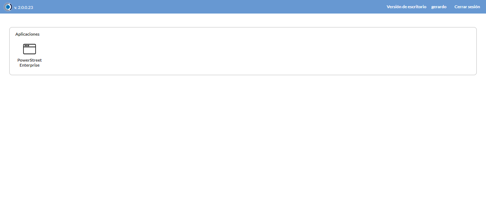
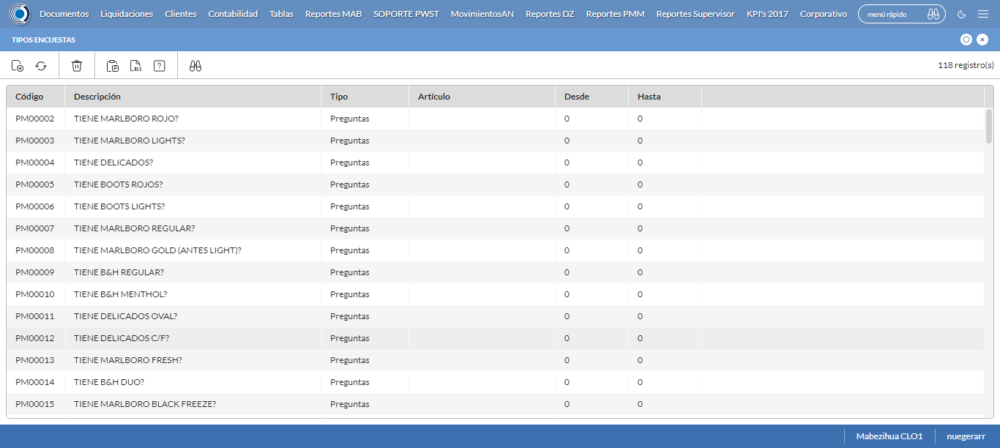
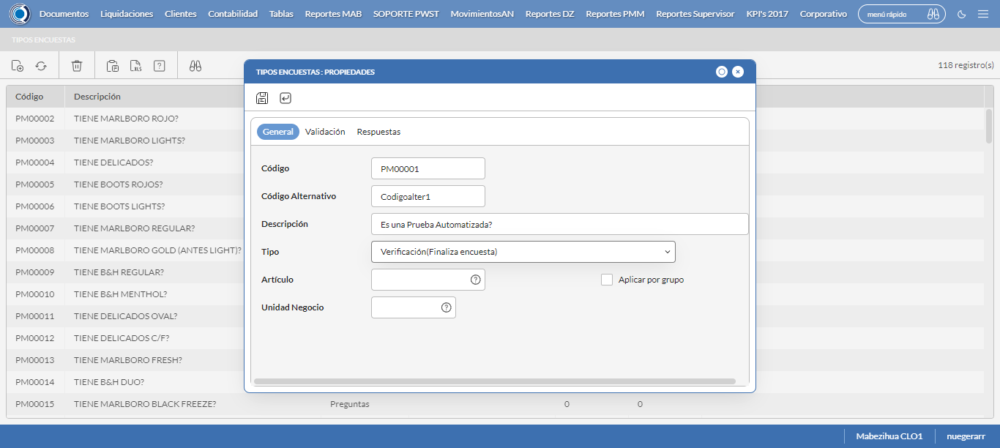
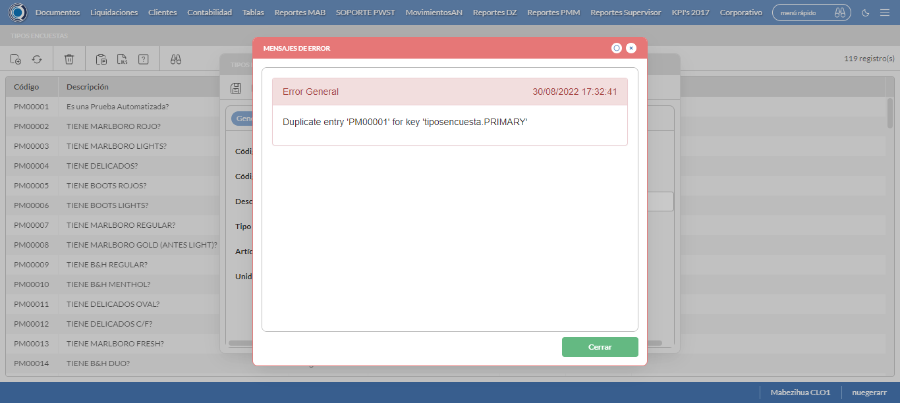

Desarrollado por : Area de Testing PWST
Fecha y hora de inicio : 2022-08-30 15:29:22
Duracion : 0:03:32.564255
Resultado : Total 8，Correctos 5 ，Errores 3 ，Taza de resultado 62.50%
Resumen 62.50% Errores 3 Fallidos 0 Correctos 5 Test realizados 8
| Caso de Prueba | Total | Correctos | Fallido | Error | Detalles | Captura del error |
| TipoEncuestas3.Test: Escenario 1 de Tipo de Encuestas 3 | 8 | 5 | 0 | 3 | Detalles | |
test |
pt1_1: 2022-08-30 15:29:24,254 - root - INFO - Se abre el chrome
2022-08-30 15:29:28,737 - root - INFO - Entra a la URL
2022-08-30 15:29:28,874 - root - INFO - Maximiza la pantalla
2022-08-30 15:29:31,926 - root - INFO - Cambia al frame
|
|
||||
test_000: Ingresa a la base de datos |
pt1_2: 2022-08-30 15:29:35,031 - root - INFO - Escribe el usuario
2022-08-30 15:29:35,139 - root - INFO - Escribe la contraseña
2022-08-30 15:29:35,274 - root - INFO - Se dio clic en el boton ingresar
2022-08-30 15:29:38,876 - root - INFO - Ejecutar Enterprise
2022-08-30 15:29:38,878 - root - INFO - Captura: C:\xampp\htdocs\versiones\automatizaciones\AutoPWST\03TDE\report\img screen：20220830_15_29_38.png
2022-08-30 15:29:43,092 - root - INFO - Cambia entre pestañas
|
 | ||||
test_001: Abre menu y ejecuta pantalla |
pt1_3: 2022-08-30 15:30:10,180 - root - INFO - Abre el menu completo
2022-08-30 15:30:26,162 - root - INFO - Abre la pantalla de Tipo Encuestas
2022-08-30 15:30:26,264 - root - INFO - La pantalla ejecutada es Tipo Encuestas.
2022-08-30 15:30:29,272 - root - INFO - Captura: C:\xampp\htdocs\versiones\automatizaciones\AutoPWST\03TDE\report\img screen：20220830_15_30_29.png
2022-08-30 15:30:29,526 - root - INFO - Se presiona el boton 'Nuevo', para crear un nuevo registro.
|
 | ||||
test_002: Abre la ventana de nuevo y crear un registro |
pt1_4: 2022-08-30 15:30:34,593 - root - INFO - Se abrio la pantalla para el ingreso de un registro nuevo.
2022-08-30 15:30:34,641 - root - INFO - El campo 'Código' si se encuentra visible.
2022-08-30 15:30:34,682 - root - INFO - El campo 'Código Alternativo' si se encuentra visible.
2022-08-30 15:30:34,725 - root - INFO - El campo 'Descripción' si se encuentra visible.
2022-08-30 15:30:34,767 - root - INFO - El campo 'Tipo' si se encuentra visible.
2022-08-30 15:30:34,847 - root - INFO - Ingresa el Codigo del nuevo registro
2022-08-30 15:30:38,006 - root - INFO - Ingresa el Codigo Alternativo del nuevo registro
2022-08-30 15:30:41,196 - root - INFO - Ingresa la Descripcion del nuevo registro
2022-08-30 15:30:54,659 - root - INFO - Captura: C:\xampp\htdocs\versiones\automatizaciones\AutoPWST\03TDE\report\img screen：20220830_15_30_54.png
2022-08-30 15:31:01,129 - root - INFO - El campo 'Código' si se encuentra visible.
2022-08-30 15:31:01,172 - root - INFO - El campo 'Orden' si se encuentra visible.
2022-08-30 15:31:01,222 - root - INFO - El campo 'Descripción' si se encuentra visible.
2022-08-30 15:31:01,260 - root - INFO - El campo 'Finaliza Encuesta' si se encuentra visible.
2022-08-30 15:31:01,334 - root - INFO - Ingresa el Codigo del nuevo registro
2022-08-30 15:31:04,478 - root - INFO - Ingresa la Orden del nuevo registro
2022-08-30 15:31:07,705 - root - INFO - Ingresa la Descripción del nuevo registro
2022-08-30 15:31:10,827 - root - INFO - Se da clic en el boton Guardar de la pestaña programas; se debe crear un nuevo registro.
2022-08-30 15:31:15,948 - root - INFO - Se da clic en el boton Guardar de la pestaña programas; se debe crear un nuevo registro.
2022-08-30 15:31:24,154 - root - INFO - Ingresa el Codigo del nuevo registro
2022-08-30 15:31:27,294 - root - INFO - Ingresa la Orden del nuevo registro
2022-08-30 15:31:30,386 - root - INFO - Ingresa la Descripción del nuevo registro
2022-08-30 15:31:33,591 - root - INFO - Se da clic en el boton Guardar de la pestaña programas; se debe crear un nuevo registro.
2022-08-30 15:31:38,729 - root - INFO - Se da clic en el boton Guardar de la pestaña programas; se debe crear un nuevo registro.
2022-08-30 15:31:46,991 - root - INFO - Ingresa el Codigo del nuevo registro
2022-08-30 15:31:50,090 - root - INFO - Ingresa la Orden del nuevo registro
2022-08-30 15:31:53,260 - root - INFO - Ingresa la Descripción del nuevo registro
2022-08-30 15:31:56,400 - root - INFO - Se da clic en el boton Guardar de la pestaña programas; se debe crear un nuevo registro.
2022-08-30 15:32:01,563 - root - INFO - Se da clic en el boton Guardar de la pestaña programas; se debe crear un nuevo registro.
2022-08-30 15:32:06,696 - root - INFO - Se da clic en el boton Guardar; se debe crear un nuevo registro.
|
 | ||||
test_003: Repetir el registro creado anteriormente |
pt1_5: 2022-08-30 15:32:11,843 - root - INFO - Se presiona el boton 'Refrescar', para crear un nuevo registro igual al anterior.
2022-08-30 15:32:16,976 - root - INFO - Se presiona el boton 'Nuevo', para crear un nuevo registro igual al anterior.
2022-08-30 15:32:22,102 - root - INFO - Se abrio la pantalla para el ingreso de un registro nuevo.
2022-08-30 15:32:22,192 - root - INFO - Ingresa el Codigo del nuevo registro
2022-08-30 15:32:25,358 - root - INFO - Ingresa el Codigo Alternativo del nuevo registro
2022-08-30 15:32:28,588 - root - INFO - Ingresa la Descripcion del nuevo registro
2022-08-30 15:32:42,091 - root - INFO - Captura: C:\xampp\htdocs\versiones\automatizaciones\AutoPWST\03TDE\report\img screen：20220830_15_32_42.png
2022-08-30 15:32:42,349 - root - INFO - Se da clic en el boton Guardar; se debe crear un nuevo registro.
2022-08-30 15:32:47,362 - root - INFO - Captura: C:\xampp\htdocs\versiones\automatizaciones\AutoPWST\03TDE\report\img screen：20220830_15_32_47.png
|
 | ||||
test_004: Modificar el registro |
ft1_6: 2022-08-30 15:32:48,612 - root - ERROR - No se encontró el botón Refrescar, revise si el xpath sigue siendo el mismo, para mas detalles del error consulte el reporte
2022-08-30 15:32:51,628 - root - INFO - Captura: C:\xampp\htdocs\versiones\automatizaciones\AutoPWST\03TDE\report\img screen：20220830_15_32_51.png
Traceback (most recent call last):
File "C:\xampp\htdocs\versiones\automatizaciones\AutoPWST\03TDE\testCase\TipoEncuestas3.py", line 54, in test_004
return modificarregistro.modificarregistro(self)
File "C:\xampp\htdocs\versiones\automatizaciones\AutoPWST\03TDE\testCase\modificarregistro.py", line 23, in modificarregistro
Refresca2.click()
File "C:\Users\PWST\Desktop\Automatización\AutoPWST-2.0\AutoPWST-2.0\venv\lib\site-packages\selenium\webdriver\remote\webelement.py", line 88, in click
self._execute(Command.CLICK_ELEMENT)
File "C:\Users\PWST\Desktop\Automatización\AutoPWST-2.0\AutoPWST-2.0\venv\lib\site-packages\selenium\webdriver\remote\webelement.py", line 396, in _execute
return self._parent.execute(command, params)
File "C:\Users\PWST\Desktop\Automatización\AutoPWST-2.0\AutoPWST-2.0\venv\lib\site-packages\selenium\webdriver\remote\webdriver.py", line 435, in execute
self.error_handler.check_response(response)
File "C:\Users\PWST\Desktop\Automatización\AutoPWST-2.0\AutoPWST-2.0\venv\lib\site-packages\selenium\webdriver\remote\errorhandler.py", line 247, in check_response
raise exception_class(message, screen, stacktrace)
selenium.common.exceptions.ElementClickInterceptedException: Message: element click intercepted: Element <div tabindex="12" id="_07DC3AC2ED5F4CB09170A82409D93382__refresh_element" name="_07DC3AC2ED5F4CB09170A82409D93382__refresh_element">...</div> is not clickable at point (56, 88). Other element would receive the click: <div class="ui-modal-container">...</div>
(Session info: chrome=104.0.5112.102)
Stacktrace:
Backtrace:
Ordinal0 [0x01176463+2188387]
Ordinal0 [0x0110E461+1762401]
Ordinal0 [0x01023D78+802168]
Ordinal0 [0x01057F9B+1015707]
Ordinal0 [0x01055F68+1007464]
Ordinal0 [0x01053C6B+998507]
Ordinal0 [0x010529D9+993753]
Ordinal0 [0x01048613+951827]
Ordinal0 [0x0106C7DC+1099740]
Ordinal0 [0x01047FF4+950260]
Ordinal0 [0x0106C9F4+1100276]
Ordinal0 [0x0107CC22+1166370]
Ordinal0 [0x0106C5F6+1099254]
Ordinal0 [0x01046BE0+945120]
Ordinal0 [0x01047AD6+948950]
GetHandleVerifier [0x014171F2+2712546]
GetHandleVerifier [0x0140886D+2652765]
GetHandleVerifier [0x0120002A+520730]
GetHandleVerifier [0x011FEE06+516086]
Ordinal0 [0x0111468B+1787531]
Ordinal0 [0x01118E88+1805960]
Ordinal0 [0x01118F75+1806197]
Ordinal0 [0x01121DF1+1842673]
BaseThreadInitThunk [0x762FFA29+25]
RtlGetAppContainerNamedObjectPath [0x77E17A9E+286]
RtlGetAppContainerNamedObjectPath [0x77E17A6E+238]
|

|
||||
test_005: Eliminar el registro creado |
ft1_7: 2022-08-30 15:32:52,153 - root - ERROR - No se encontró el botón Refrescar, revise si el xpath sigue siendo el mismo, para mas detalles del error consulte el reporte
2022-08-30 15:32:55,156 - root - INFO - Captura: C:\xampp\htdocs\versiones\automatizaciones\AutoPWST\03TDE\report\img screen：20220830_15_32_55.png
Traceback (most recent call last):
File "C:\xampp\htdocs\versiones\automatizaciones\AutoPWST\03TDE\testCase\eliminarregistro.py", line 21, in eliminarregistro
Refresca3 = self.wait.until(conditions.visibility((By.XPATH, Configuracion.btn_Refresca)))
File "C:\Users\PWST\Desktop\Automatización\AutoPWST-2.0\AutoPWST-2.0\venv\lib\site-packages\selenium\webdriver\support\wait.py", line 81, in until
value = method(self._driver)
File "C:\Users\PWST\Desktop\Automatización\AutoPWST-2.0\AutoPWST-2.0\venv\lib\site-packages\selenium\webdriver\support\expected_conditions.py", line 125, in _predicate
return _element_if_visible(driver.find_element(*locator))
File "C:\Users\PWST\Desktop\Automatización\AutoPWST-2.0\AutoPWST-2.0\venv\lib\site-packages\selenium\webdriver\remote\webdriver.py", line 857, in find_element
return self.execute(Command.FIND_ELEMENT, {
File "C:\Users\PWST\Desktop\Automatización\AutoPWST-2.0\AutoPWST-2.0\venv\lib\site-packages\selenium\webdriver\remote\webdriver.py", line 435, in execute
self.error_handler.check_response(response)
File "C:\Users\PWST\Desktop\Automatización\AutoPWST-2.0\AutoPWST-2.0\venv\lib\site-packages\selenium\webdriver\remote\errorhandler.py", line 247, in check_response
raise exception_class(message, screen, stacktrace)
selenium.common.exceptions.InvalidSessionIdException: Message: invalid session id
Stacktrace:
Backtrace:
Ordinal0 [0x01176463+2188387]
Ordinal0 [0x0110E461+1762401]
Ordinal0 [0x01023C40+801856]
Ordinal0 [0x010468BD+944317]
Ordinal0 [0x01047AD6+948950]
GetHandleVerifier [0x014171F2+2712546]
GetHandleVerifier [0x0140886D+2652765]
GetHandleVerifier [0x0120002A+520730]
GetHandleVerifier [0x011FEE06+516086]
Ordinal0 [0x0111468B+1787531]
Ordinal0 [0x01118E88+1805960]
Ordinal0 [0x01118F75+1806197]
Ordinal0 [0x01121DF1+1842673]
BaseThreadInitThunk [0x762FFA29+25]
RtlGetAppContainerNamedObjectPath [0x77E17A9E+286]
RtlGetAppContainerNamedObjectPath [0x77E17A6E+238]
During handling of the above exception, another exception occurred:
Traceback (most recent call last):
File "C:\xampp\htdocs\versiones\automatizaciones\AutoPWST\03TDE\testCase\TipoEncuestas3.py", line 58, in test_005
return eliminarregistro.eliminarregistro(self)
File "C:\xampp\htdocs\versiones\automatizaciones\AutoPWST\03TDE\testCase\eliminarregistro.py", line 32, in eliminarregistro
self.driver.get_screenshot_as_file(img_name)
File "C:\Users\PWST\Desktop\Automatización\AutoPWST-2.0\AutoPWST-2.0\venv\lib\site-packages\selenium\webdriver\remote\webdriver.py", line 928, in get_screenshot_as_file
png = self.get_screenshot_as_png()
File "C:\Users\PWST\Desktop\Automatización\AutoPWST-2.0\AutoPWST-2.0\venv\lib\site-packages\selenium\webdriver\remote\webdriver.py", line 964, in get_screenshot_as_png
return b64decode(self.get_screenshot_as_base64().encode('ascii'))
File "C:\Users\PWST\Desktop\Automatización\AutoPWST-2.0\AutoPWST-2.0\venv\lib\site-packages\selenium\webdriver\remote\webdriver.py", line 976, in get_screenshot_as_base64
return self.execute(Command.SCREENSHOT)['value']
File "C:\Users\PWST\Desktop\Automatización\AutoPWST-2.0\AutoPWST-2.0\venv\lib\site-packages\selenium\webdriver\remote\webdriver.py", line 435, in execute
self.error_handler.check_response(response)
File "C:\Users\PWST\Desktop\Automatización\AutoPWST-2.0\AutoPWST-2.0\venv\lib\site-packages\selenium\webdriver\remote\errorhandler.py", line 247, in check_response
raise exception_class(message, screen, stacktrace)
selenium.common.exceptions.InvalidSessionIdException: Message: invalid session id
Stacktrace:
Backtrace:
Ordinal0 [0x01176463+2188387]
Ordinal0 [0x0110E461+1762401]
Ordinal0 [0x01023C40+801856]
Ordinal0 [0x01046660+943712]
Ordinal0 [0x0106C6D0+1099472]
Ordinal0 [0x0106A523+1090851]
Ordinal0 [0x0106A0D8+1089752]
Ordinal0 [0x01005447+676935]
Ordinal0 [0x010059C3+678339]
Ordinal0 [0x01005DFA+679418]
GetHandleVerifier [0x014171F2+2712546]
GetHandleVerifier [0x0140886D+2652765]
GetHandleVerifier [0x0120002A+520730]
GetHandleVerifier [0x011FEE06+516086]
Ordinal0 [0x0111468B+1787531]
Ordinal0 [0x010051D7+676311]
Ordinal0 [0x01004C88+674952]
GetHandleVerifier [0x014395BC+2852780]
BaseThreadInitThunk [0x762FFA29+25]
RtlGetAppContainerNamedObjectPath [0x77E17A9E+286]
RtlGetAppContainerNamedObjectPath [0x77E17A6E+238]
|

|
||||
test_006: Cerrar_Navegador |
ft1_8: Traceback (most recent call last):
File "C:\xampp\htdocs\versiones\automatizaciones\AutoPWST\03TDE\testCase\TipoEncuestas3.py", line 62, in test_006
self.driver.close()
File "C:\Users\PWST\Desktop\Automatización\AutoPWST-2.0\AutoPWST-2.0\venv\lib\site-packages\selenium\webdriver\remote\webdriver.py", line 552, in close
self.execute(Command.CLOSE)
File "C:\Users\PWST\Desktop\Automatización\AutoPWST-2.0\AutoPWST-2.0\venv\lib\site-packages\selenium\webdriver\remote\webdriver.py", line 435, in execute
self.error_handler.check_response(response)
File "C:\Users\PWST\Desktop\Automatización\AutoPWST-2.0\AutoPWST-2.0\venv\lib\site-packages\selenium\webdriver\remote\errorhandler.py", line 247, in check_response
raise exception_class(message, screen, stacktrace)
selenium.common.exceptions.InvalidSessionIdException: Message: invalid session id
Stacktrace:
Backtrace:
Ordinal0 [0x01176463+2188387]
Ordinal0 [0x0110E461+1762401]
Ordinal0 [0x01023C40+801856]
Ordinal0 [0x01046660+943712]
Ordinal0 [0x0106C6D0+1099472]
Ordinal0 [0x0106A523+1090851]
Ordinal0 [0x0106A0D8+1089752]
Ordinal0 [0x01005447+676935]
Ordinal0 [0x010059C3+678339]
Ordinal0 [0x01005DFA+679418]
GetHandleVerifier [0x014171F2+2712546]
GetHandleVerifier [0x0140886D+2652765]
GetHandleVerifier [0x0120002A+520730]
GetHandleVerifier [0x011FEE06+516086]
Ordinal0 [0x0111468B+1787531]
Ordinal0 [0x010051D7+676311]
Ordinal0 [0x01004C88+674952]
GetHandleVerifier [0x014395BC+2852780]
BaseThreadInitThunk [0x762FFA29+25]
RtlGetAppContainerNamedObjectPath [0x77E17A9E+286]
RtlGetAppContainerNamedObjectPath [0x77E17A6E+238]
|
|
||||
| Caso de prueba | 8 | 5 | 0 | 3 | Taza de resultado：62.50% | |